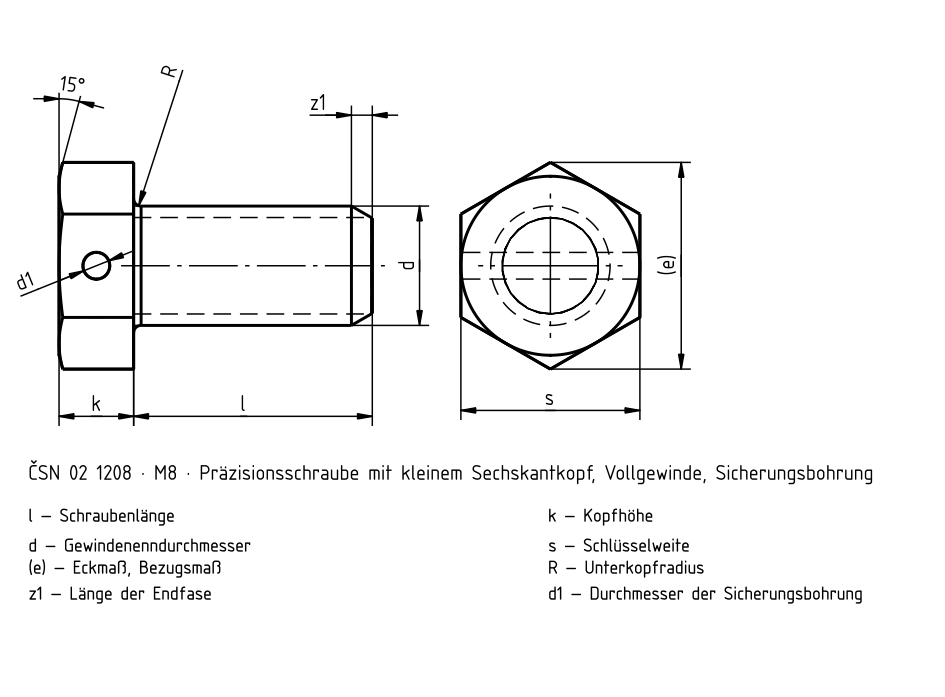
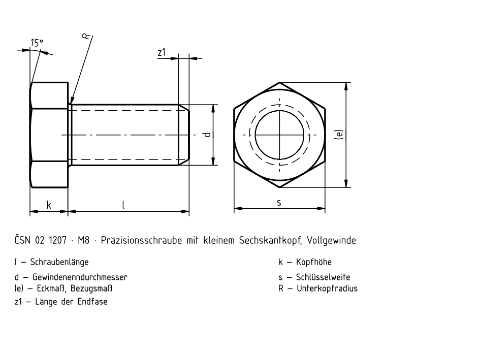
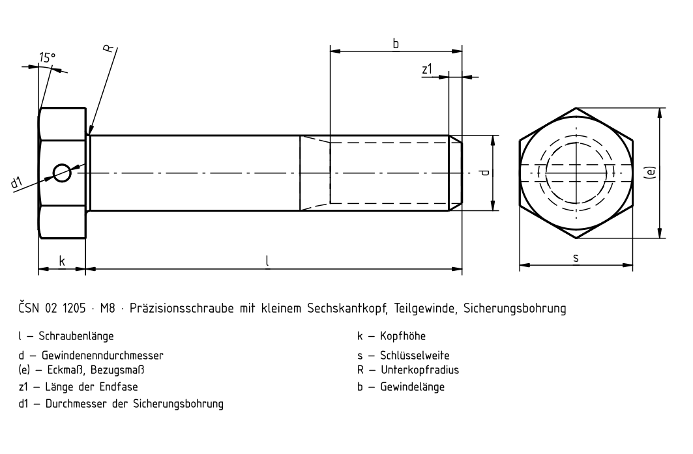
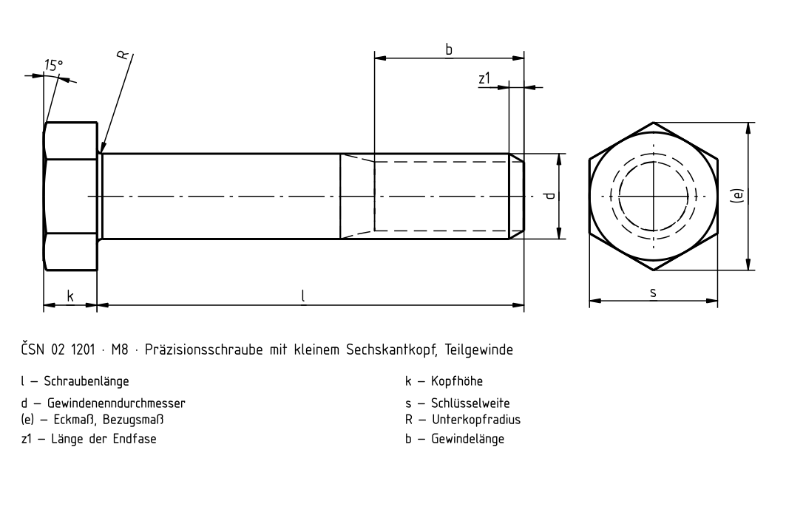

Präzisionsschrauben mit kleinem Sechskantkopf
Historische Quelle; Zahlenwerte und Ausnahmen sind nicht vollständig gegen die gültige Norm geprüft.




Historische Quelle; Zahlenwerte und Ausnahmen sind nicht vollständig gegen die gültige Norm geprüft.



